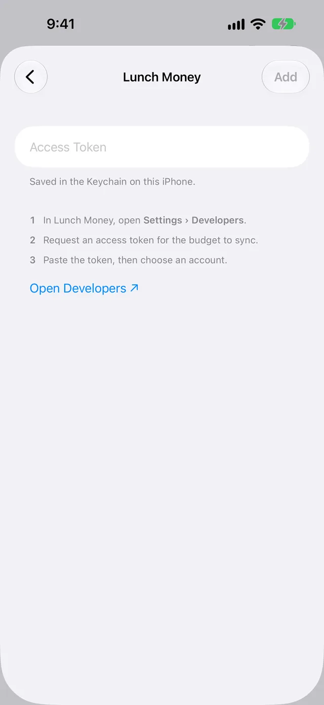
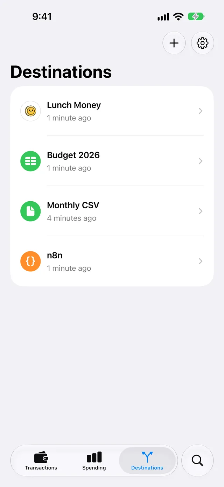

Send Apple Card transactions to Lunch Money
WalletFeed sends your Apple Card, Apple Cash and Savings transactions from your iPhone to Lunch Money. You get an access token in Lunch Money, then paste it into WalletFeed.
Before you start
- An iPhone with iOS 26 or a newer version. WalletFeed is available only in the US.
- WalletFeed, with access to your Wallet accounts.
- WalletFeed Pro. You must have it to send transactions to Lunch Money. It is a subscription with a 1-week free trial, or a one-time Lifetime purchase. Refer to WalletFeed Pro.
- A Lunch Money budget. Lunch Money has a 30-day free trial, and you can start the trial without a credit card.
Step 1: Select Lunch Money in WalletFeed
-
On your iPhone, open WalletFeed.
-
Tap Destinations.
-
Tap + at the top of the screen.

-
Tap Lunch Money, below Budgeting.

Result: WalletFeed shows the Lunch Money screen. If you do not have WalletFeed Pro, it shows WalletFeed Pro first.
-
If WalletFeed shows WalletFeed Pro, get WalletFeed Pro. Refer to WalletFeed Pro.
Step 2: Get an access token in Lunch Money
An access token lets WalletFeed send transactions to one Lunch Money budget. The token is for the budget that is open when you get it.
-
On the Lunch Money screen in WalletFeed, tap Open Developers.

Result: your iPhone shows the Lunch Money Developers page.
-
If Lunch Money shows its login page, log in with your Lunch Money email address and password.
-
If you have more than one budget, tap the circle at the top right of the page.
Result: Lunch Money shows Switch Accounts.
-
In Switch Accounts, select the budget for your transactions.
-
In New Access Token, type a label for the token, such as WalletFeed.
-
Tap Request new access token.
Result: Lunch Money shows the token.
-
Tap Copy.
Step 3: Paste the token in WalletFeed
-
Go back to WalletFeed.
Result: WalletFeed shows the Lunch Money screen.
-
If WalletFeed shows a different screen, do Step 1 again.
-
Paste the token into Access Token.
Result: WalletFeed connects to Lunch Money and shows Account.
-
In Account, select the Lunch Money account for your transactions.
If you select New Apple Card Account, WalletFeed makes a credit account with the name Apple Card. Its balance is 0.
If your budget has an account with the name Apple Card, WalletFeed selects that account.
The list does not show closed accounts, or accounts that cannot have transactions.
-
Tap Add.
Result: WalletFeed shows Send Transactions to Lunch Money? with a message. The message tells you what Lunch Money receives, from which Wallet accounts, and from which date.
If you tap Cancel, WalletFeed removes the new destination and sends nothing.
-
Tap Send.
Result: WalletFeed starts to send transactions to Lunch Money.

In Lunch Money, the transactions show on the Transactions page.
Data that Lunch Money receives
WalletFeed adds each transaction to the Lunch Money account that you selected. This table shows where each item goes in Lunch Money.
| WalletFeed sends | Lunch Money field |
|---|---|
| Date of the transaction, in your time zone | Date |
| Merchant name, or the description if there is no merchant name | Payee |
| Card statement text | Original payee name |
| Amount | Amount |
| Currency | Currency |
| Transaction ID | External ID |
| Wallet status, transaction type, merchant category code and WalletFeed category | Custom metadata |
A purchase goes to Lunch Money as money out. A payment goes as money in. WalletFeed uses the external ID to find the transaction again when it changes. Apps that use the Lunch Money API can read the custom metadata.
WalletFeed does not set the Lunch Money category. Lunch Money applies your rules for the account to each new transaction. Thus, a rule can set the category. Each new transaction starts as unreviewed.
After WalletFeed adds a transaction, it does not change the payee, category, notes, tags or review status. It changes only the date, amount, currency and Wallet status, when these change in Wallet.
WalletFeed does not change the balance of the Lunch Money account. To correct the balance, change it on the Lunch Money Accounts page.
Lunch Money receives transactions from all the Wallet accounts that you share with WalletFeed. They all go to the one Lunch Money account. To send transactions from only some Wallet accounts, use a filter. Refer to Send only some transactions.
Your transactions go from your iPhone directly to Lunch Money. WalletFeed has no account and no WalletFeed servers. WalletFeed keeps the token in the Keychain on your iPhone. After Lunch Money receives your transactions, the Lunch Money terms of service are applicable to them.
New and changed transactions
While WalletFeed is open, Lunch Money receives changes in seconds. When WalletFeed is closed, iOS starts WalletFeed in approximately 1 hour or less after a change in Wallet. Then WalletFeed sends the change. For this, Background Sync must be on in Settings › Sync.
Wallet shows a new charge as pending until the charge posts. Lunch Money does not mark transactions in a manual account as pending. Thus, a pending charge shows in Lunch Money as a usual transaction. WalletFeed records the Wallet status in the custom metadata.
When the charge posts, WalletFeed changes the same transaction in Lunch Money. The date stays the same. If the posted amount is different, WalletFeed changes the amount. To send charges only after they post, set Include Pending to off in the filter.
A refund goes to Lunch Money as money in. If Wallet shows a charge as declined or expired, WalletFeed deletes it from Lunch Money. WalletFeed also deletes a transaction that Wallet removes. But WalletFeed does not delete a transaction that you split or put in a group in Lunch Money.
Send previous transactions
A new destination also receives previous transactions, from the start date in Settings › Sync › Initial History. Initial History is All until you change it. To start from a different date, set Initial History before you add Lunch Money.
To send more previous transactions after you add Lunch Money, use Send History:
-
In Destinations, tap the Lunch Money destination.

-
Tap Send History.
-
Select 30 Days, 90 Days, 1 Year or All.
Result: WalletFeed shows Sending History, with the number of transactions that it sent.
WalletFeed sends previous transactions to Lunch Money in groups of 50. It waits 45 seconds between groups. Lunch Money does not receive the same transaction two times. To stop, tap Send History, then tap Stop Sending.
Change or remove the destination
Send only some transactions
- In Destinations, tap the Lunch Money destination.
- Set Filter to on.
- Set the filter. The table that follows gives the controls.
| Control | Result |
|---|---|
| Include | Sends all transactions, only purchases or only credits. |
| Minimum | Sends only transactions of this amount or more. |
| Include Pending | When off, sends charges only after they post. |
| Accounts | Sends only transactions from the Wallet accounts that you select. |
| Categories | Sends only transactions in the categories that you select. |
| Exclude | Does not send transactions from the merchants that you type. Put a comma between merchants. |
If Apple Intelligence is on, you can also type a rule in words, for example "Travel over $50, not Uber". Then tap the Apple Intelligence symbol to make the rule.
A filter applies only to the transactions that WalletFeed sends after you set it.
Replace the token
-
Get a new access token for the same budget, as in Step 2.
-
In Destinations, tap the Lunch Money destination.
-
Tap Replace Token.
-
Paste the new token into Access Token.
-
Tap Replace.
Result: WalletFeed shows a green check mark.
The new token must come from the same budget. A token from a different budget cannot get access to the account.
Stop or delete the destination
To stop the destination for a period, set Enabled to off in the destination.
To delete the destination, do these steps:
- In Destinations, tap the Lunch Money destination.
- Tap Delete.
- Tap Delete again.
The transactions that WalletFeed sent stay in Lunch Money. If you do not use the token again, revoke it in Lunch Money:
- On your iPhone, open the Lunch Money Developers page.
- In Active Access Tokens, tap Revoke for the WalletFeed token.
If something goes wrong
If WalletFeed shows "Token rejected" or "Authentication failed"
Lunch Money does not accept the token. This occurs if someone revoked the token, or if the pasted text is not the full token.
- Get a new access token, as in Step 2.
- If WalletFeed shows the Lunch Money screen, paste the new token into Access Token.
- If you added Lunch Money before, replace the token. Refer to Replace the token.
If WalletFeed shows "The account is gone from Lunch Money"
The Lunch Money account for this destination does not exist, or the token is for a different budget.
- In Destinations, tap the Lunch Money destination.
- Tap Delete.
- Tap Delete again.
- Do Step 1, Step 2 and Step 3 again.
If the transactions go to an incorrect budget
The token is for the budget that was open when you got the token.
- Delete the Lunch Money destination. Refer to Stop or delete the destination.
- In Lunch Money, select the correct budget in Switch Accounts.
- Do Step 1, Step 2 and Step 3 again.
The transactions in the incorrect budget stay there. You can delete them in Lunch Money.
If Lunch Money does not receive new transactions
WalletFeed cannot send to Lunch Money. For example, the destination is off, or Background Sync is off.
- Open WalletFeed. While WalletFeed is open, it sends changes in seconds.
- If Destinations shows Sync Requires Pro, tap Upgrade.
- If the Lunch Money destination shows Off, set Enabled to on in the destination.
- If Filter is on, make sure that the filter includes the transaction.
- Tap Settings at the top of Destinations.
- Make sure that Background Sync is on.
- Tap Sync Now.
After your iPhone restarts, WalletFeed cannot send to destinations until you type your passcode one time.
To make sure that the connection operates, tap Send Test in the destination. If Lunch Money receives the test transaction, WalletFeed shows a green check mark.
If the balance in Lunch Money is not correct
WalletFeed does not change the balance of the Lunch Money account.
- In Lunch Money, open the Accounts page.
- Change the balance of the account that receives your transactions.
If WalletFeed shows "Too many requests" or "Rejected (HTTP 429)"
Lunch Money accepts a maximum of 100 requests each minute. WalletFeed waits, then tries again.
- Wait. WalletFeed tries again at the time that it shows, or at the next sync.
Related
Updated October 30, 2026